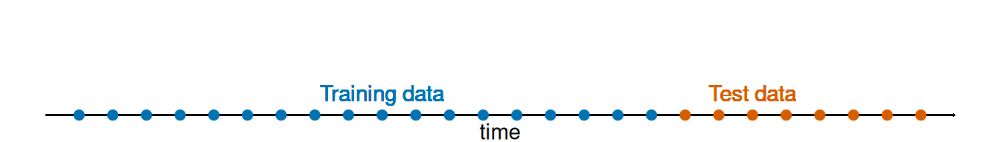
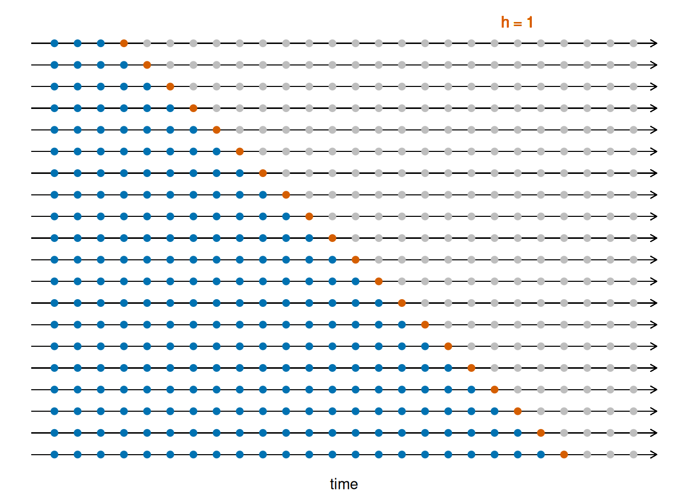
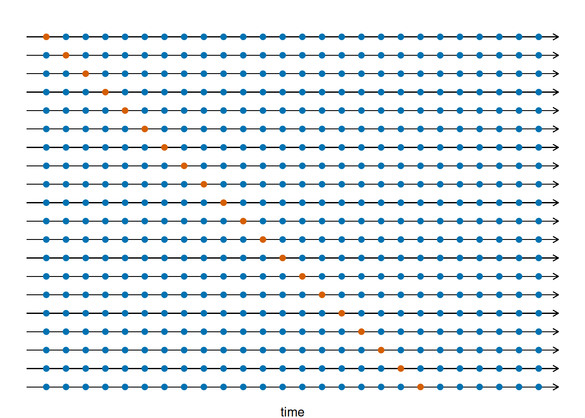

ETC3550/ETC5550 Applied forecasting
Multiple regression and forecasting
- y_t is the variable we want to predict: the “response” variable
- Each x_{j,t} is numerical and is called a “predictor”. They are usually assumed to be known for all past and future times.
- The coefficients \beta_1,\dots,\beta_k measure the effect of each predictor after taking account of the effect of all other predictors in the model.
- \varepsilon_t is a white noise error term
Trend
Linear trend
Piecewise linear trend with bend at \tau \begin{align*} x_{1,t} &= t \\ x_{2,t} &= \left\{ \begin{array}{ll} 0 & t <\tau\\ (t-\tau) & t \ge \tau \end{array}\right. \end{align*}
Quadratic or higher order trend
Uses of dummy variables
Seasonal dummies
- For quarterly data: use 3 dummies
- For monthly data: use 11 dummies
- For daily data: use 6 dummies
- What to do with weekly data?
Outliers
- A dummy variable can remove its effect.
Public holidays
- For daily data: if it is a public holiday, dummy=1, otherwise dummy=0.
Holidays
For monthly data
- Christmas: always in December so part of monthly seasonal effect
- Easter: use a dummy variable v_t=1 if any part of Easter is in that month, v_t=0 otherwise.
- Ramadan and Chinese New Year similar.
Distributed lags
Lagged values of a predictor.
Example: x is advertising which has a delayed effect
\begin{align*} x_{1} &= \text{advertising for previous month;} \\ x_{2} &= \text{advertising for two months previously;} \\ & \vdots \\ x_{m} &= \text{advertising for $m$ months previously.} \end{align*}
Fourier series
Periodic seasonality can be handled using pairs of Fourier s_{k}(t) = \sin\left(\frac{2\pi k t}{m}\right)\qquad c_{k}(t) = \cos\left(\frac{2\pi k t}{m}\right) y_t = a + bt + \sum_{k=1}^K \left[\alpha_k s_k(t) + \beta_k c_k(t)\right] + \varepsilon_t
- Every periodic function can be approximated by sums of sin and cos terms for large enough K.
- Choose K by minimizing AICc or CV.
- Called “harmonic regression”
Your turn
Fit a regression model with a piecewise linear trend with Fourier terms for the US leisure employment data.
leisure <- us_employment |> filter( Title == "Leisure and Hospitality", year(Month) > 2001 ) |> mutate(Employed = Employed / 1000) |> select(Month, Employed)Does the model fit well? What are the implications for forecasting?
Comparing regression models
- R^2 does not allow for “degrees of freedom”.
- Adding any variable tends to increase the value of R^2, even if that variable is irrelevant.
Akaike’s Information Criterion
- L= likelihood
- k= # predictors in model.
- AIC penalizes terms more heavily than \bar{R}^2.
- Minimizing the AIC or AICc is asymptotically equivalent to minimizing MSE via leave-one-out cross-validation (for any linear regression).
Leave-one-out cross-validation
For regression, leave-one-out cross-validation is faster and more efficient than time-series cross-validation.
- Select one observation for test set, and use remaining observations in training set. Compute error on test observation.
- Repeat using each possible observation as the test set.
- Compute accuracy measure over all errors.
Cross-validation
Traditional evaluation
Time series cross-validation

Cross-validation
Traditional evaluation
Leave-one-out cross-validation

Bayesian Information Criterion
where L is the likelihood and k is the number of predictors in the model.
- BIC penalizes terms more heavily than AIC
- Also called SBIC and SC.
- Minimizing BIC is asymptotically equivalent to leave-v-out cross-validation when v = T[1-1/(log(T)-1)].
Choosing regression variables
Best subsets regression
- Fit all possible regression models using one or more of the predictors.
- Choose the best model based on one of the measures of predictive ability (CV, AIC, AICc).
Backwards stepwise regression
- Start with a model containing all variables.
- Subtract one variable at a time. Keep model if lower CV.
- Iterate until no further improvement.
- Not guaranteed to lead to best model.
Ex-ante versus ex-post forecasts
- Ex ante forecasts are made using only information available in advance.
- require forecasts of predictors
- Ex post forecasts are made using later information on the predictors.
- useful for studying behaviour of forecasting models.
- trend, seasonal and calendar variables are all known in advance, so these don’t need to be forecast.
Your turn
Produce forecasts of US leisure employment using your best regression model.
Why don’t you need to forecast the predictors?